RAW REVIEW · 01
실제 퍼즐 · 기본판
skz_a1_001: 3×2·5 유효칸·시작번호1/2 공유·8 타일·0/3 일치.
Flutter 연결 시 보존할 내용
- 이미지의 선택·격자·카운트는 해당 실제 상태와 일치합니다. 실행 검증은 별도입니다.
exec-09b3ff63-9980-4b67-a48c-c5f4409fa7b7.png
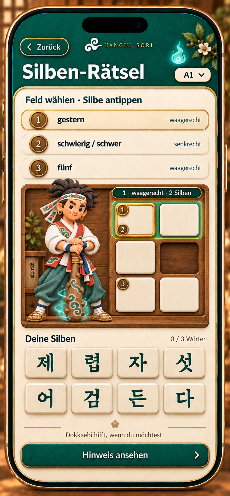
HANGUL SORI · C · PRIORITY 03
원본 26장을 직접 확인해 14종 상태로 정리했습니다. 아래 PNG는 원본과 바이트가 같은 검토용 복사본입니다. 생성 시간이나 파일명을 승인 근거로 사용하지 않았으며, 새 C 게임 내부의 Flutter 연결 완료를 뜻하지 않습니다.
도움 3은 타일을 공개하고 직접 놓게 합니다. 첫 타일 정답은 아직 0/3단어이며, 어제 완성은 1/3입니다. 일반 저장 성공은 +30 XP, 기록 복습은 추가 XP 없이 보여 줍니다. 초기안의 시작번호 이동·축약 답을 후속 보강안과 구분했습니다.
원래 12장 계획의 마지막은 소개였습니다. 새 프롬프트 12·13·14는 세로 선택·넓은 판·첫 타일로 확장되어 있습니다. 선택적 불꽃 소개와 오류·로딩 등 예외 상태는 별도 연결 계약에 남겼습니다.
RAW REVIEW · 01
skz_a1_001: 3×2·5 유효칸·시작번호1/2 공유·8 타일·0/3 일치.
exec-09b3ff63-9980-4b67-a48c-c5f4409fa7b7.png

RAW REVIEW · 02
가로2음절·시작1행1열·마스킹예문·빈칸·0/3·8 타일 일치.
exec-5503d24d-ebb9-4138-883c-0aadd74f867c.png
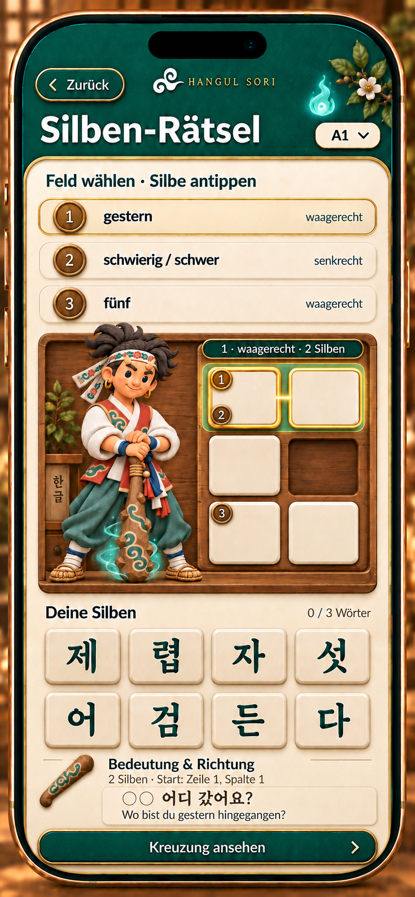
RAW REVIEW · 03
공유 첫칸 선택·빈판·8 타일·0/3. 자동 배치·XP 없음.
exec-6603f5d0-697c-4d29-b449-64630e4dcff1.png
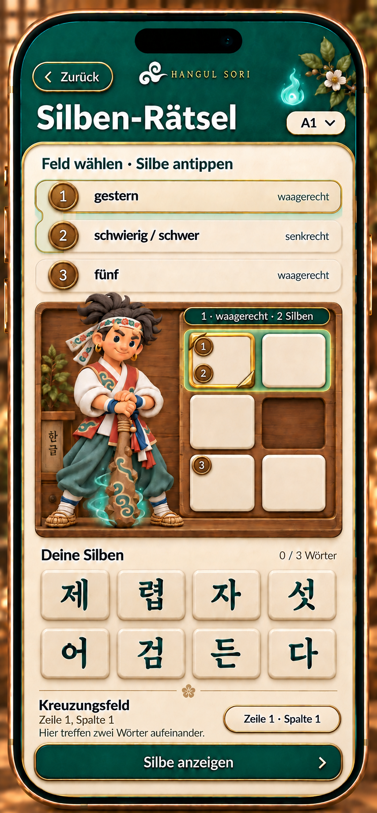
RAW REVIEW · 04
어 공개·판은 빈상태·미사용어강조·0/3·직접 선택 안내.
exec-85189dbb-8e56-4e5f-9d6f-b298fedd5dc5.png
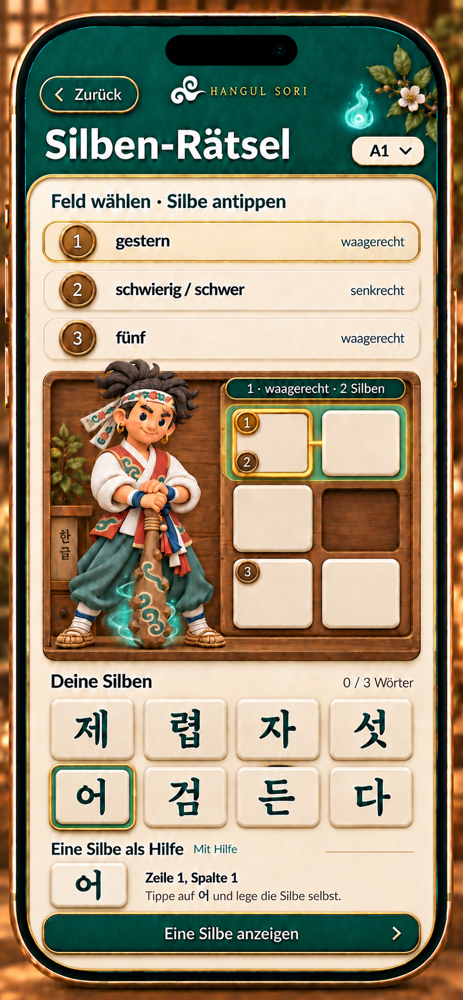
RAW REVIEW · 05
빈칸·0/3·8 타일 유지. 파란 강조는 일시 접촉 효과.
exec-cc2926db-406a-4f56-ac7d-4760cc3794f6.png
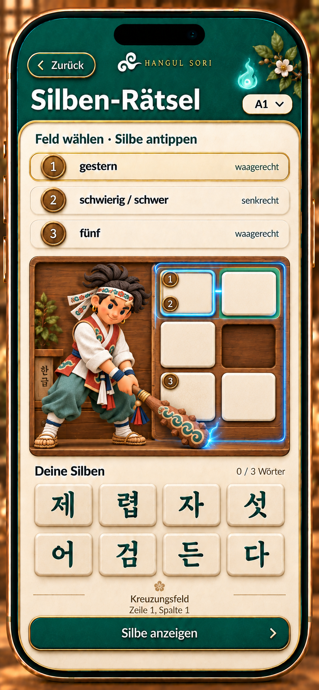
RAW REVIEW · 06
첫칸에자시도·빈판·타일 소모없음·0/3.
exec-f7a808e1-5c4c-4eba-a77d-79cbee60ab3a.png
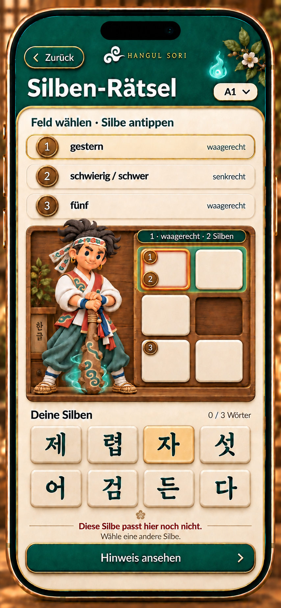
RAW REVIEW · 07
어/제사용처리·1/3·다음렵선택·복원예문·듣기. XP아직없음.
exec-625a0185-b886-41e5-8d23-2ceca8bd427a.png
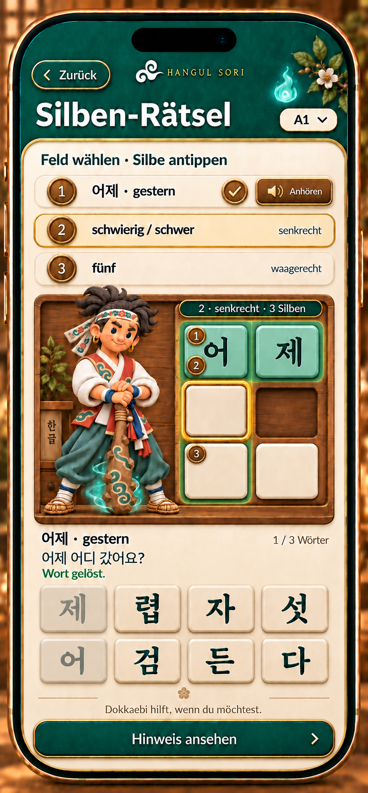
RAW REVIEW · 08
Geschafft·저장확정·+30XP·3단어·Mit Hilfe·전체답/번호·다음/사랑방.
exec-a88c4b5e-3464-4797-905f-08e68c75c863.png
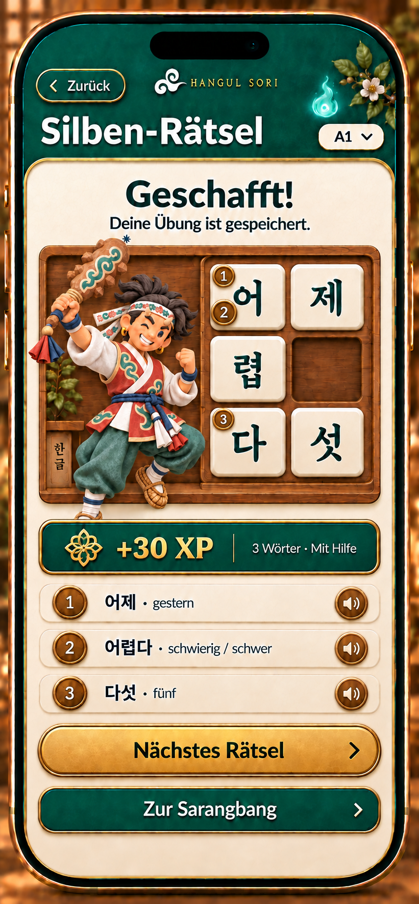
RAW REVIEW · 09
Erneut geübt·3단어·Mit Hilfe·추가XP없음·완료전체답/번호·별도듣기·Lernheft.
exec-fb48b7ee-2720-4749-b996-cd6149c5e975.png
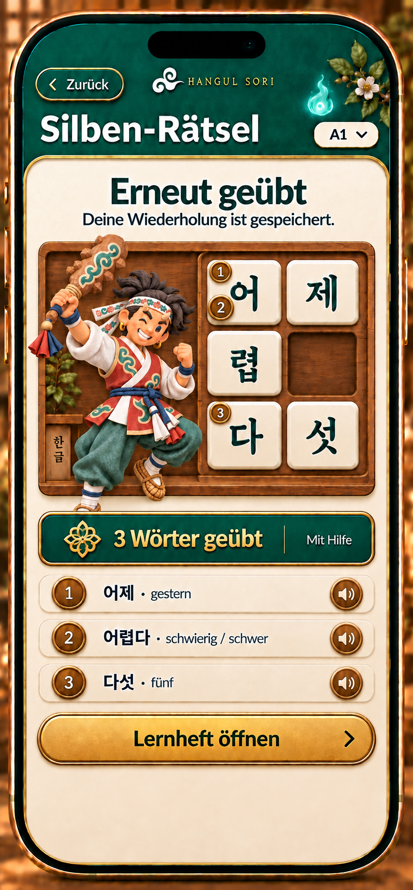
RAW REVIEW · 10
정답 유지·성공/XP미표시·재저장/뒤로·번호1/2공유.
exec-fcfd4042-aed6-4ab1-8712-4392c7d4af0f.png
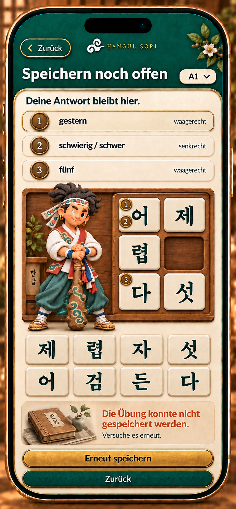
RAW REVIEW · 11
각20개·현재A1·선택 즉시 적용·닫기. 일반게임의 진입점.
exec-41ad8497-2057-4b3f-b287-4093ef572521.png
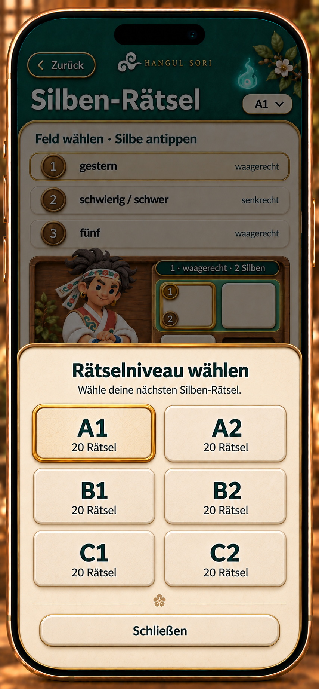
RAW REVIEW · 12
2·senkrecht·3Silben·왼쪽3빈칸·번호1/2공유·0/3·8미사용타일.
exec-352d9390-61c0-4d73-bee2-168b7131d29a.png
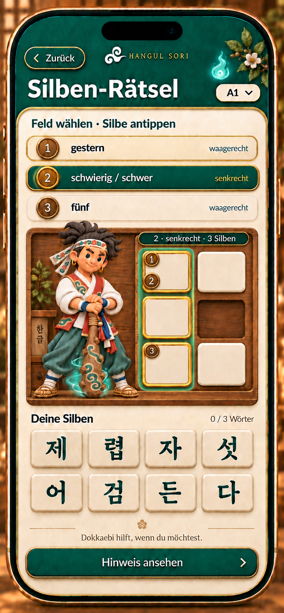
RAW REVIEW · 13
skz_a1_004·8유효칸·11타일·0/4·화장실3음절·공유번호2/3. 마지막행c4목재blocked를픽셀색과독립검토로확인.
exec-14351317-fbc2-4ef2-8634-904fad58dc37.png
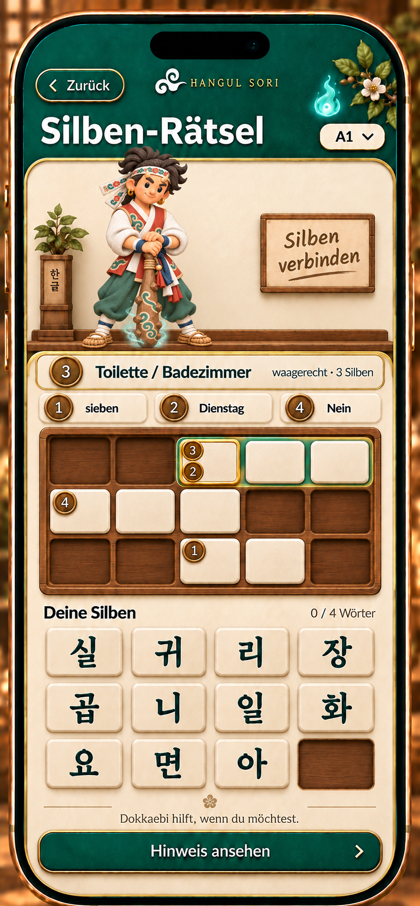
RAW REVIEW · 14
어한칸잠금·다음제빈칸선택·사용어비활성·0/3단어·XP없음. 타일1개와완성단어를구분.
exec-18668fda-1d3e-4cb0-802d-25f59eaccad0.png
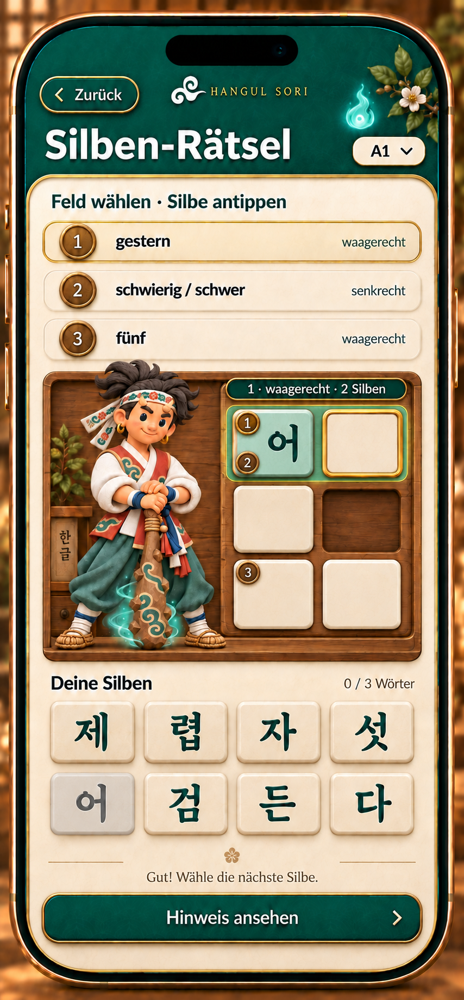
한국어 글자·수준·진도·사용 타일·XP는 실제 앱 데이터와 네이티브 텍스트로 연결합니다. 목업의 장식과 재질을 유지하면서 조작 공간을 확보합니다.